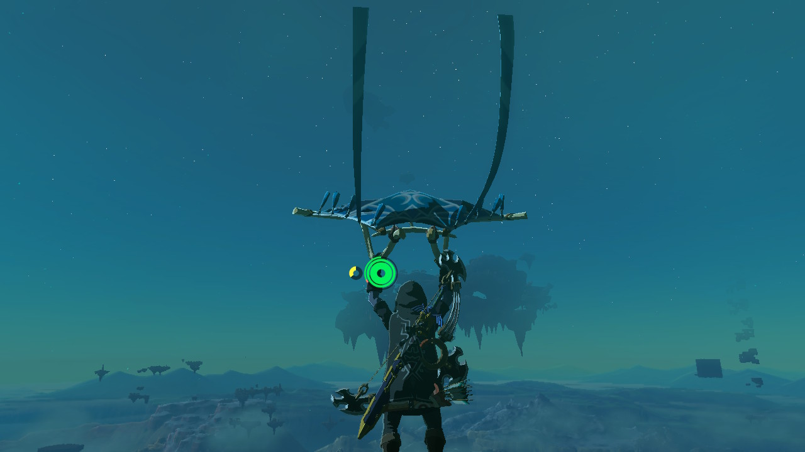

In this part,
Zora's domain from The Legend of Zelda: Tears of the Kingdom.


View of Berkeley Campus from my friend's apartment.



Necluda Sky Archipelago from The Legend of Zelda: Tears of the Kingdom.
In this project I played around with faces. One key takeaway is that face morphing doesn't use some fancy technology like neural networks or ML algorithms -- in fact, it is just linear algebra. I also learned that in order for face morphing to work well, I need two images that are aligned or else it doesn't work that well.